Log Message Description
The following are some of the most common messages usually found during a scan of SQLMap, along with an example of each from the previous exercise and its description
.•
URL content is stable 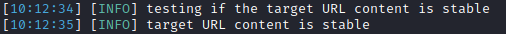 This means that there are no major changes between responses in case of continuous identical requests. This is important from the automation point of view since, in the event of stable responses, it is easier to spot differences caused by the potential SQLi attempts. While stability is important, SQLMap has advanced mechanisms to automatically remove the potential "noise" that could come from potentially unstable targets.
•
Parameter appears to be dynamic 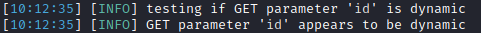 It is always desired for the tested parameter to be "dynamic," as it is a sign that any changes made to its value would result in a change in the response; hence the parameter may be linked to a database. In case the output is "static" and does not change, it could be an indicator that the value of the tested parameter is not processed by the target, at least in the current context.
•
Parameter might be injectable 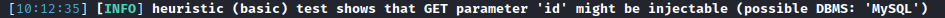 This is not proof of SQLi, but just an indication that the detection mechanism has to be proven in the subsequent run.
•
Parameter might be vulnerable to XSS attacks 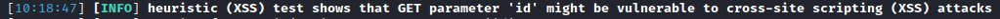 While it is not its primary purpose, SQLMap also runs a quick heuristic test for the presence of an XSS vulnerability. In large-scale tests, where a lot of parameters are being tested with SQLMap, it is nice to have these kinds of fast heuristic checks, especially if there are no SQLi vulnerabilities found.
•
Back-end DBMS is '...' 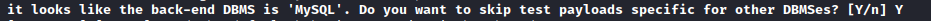 In a normal run, SQLMap tests for all supported DBMSes. In case that there is a clear indication that the target is using the specific DBMS, we can narrow down the payloads to just that specific DBMS.
•
Level/risk values 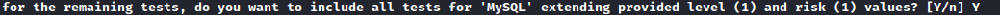 If there is a clear indication that the target uses the specific DBMS, it is also possible to extend the tests for that same specific DBMS beyond the regular tests.
This basically means running all SQL injection payloads for that specific DBMS, while if no DBMS were detected, only top payloads would be tested.
•
Reflective values found 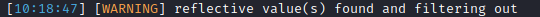 Just a warning that parts of the used payloads are found in the response. This behavior could cause problems to automation tools, as it represents the junk. However, SQLMap has filtering mechanisms to remove such junk before comparing the original page content.
•
Parameter appears to be injectable 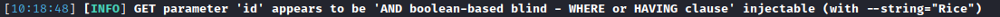 This message indicates that the parameter appears to be injectable, though there is still a chance for it to be a false-positive finding. In the case of boolean-based blind and similar SQLi types (e.g., time-based blind), where there is a high chance of false-positives, at the end of the run, SQLMap performs extensive testing consisting of simple logic checks for removal of false-positive findings.
Additionally, with --string="luther" indicates that SQLMap recognized and used the appearance of constant string value luther in the response for distinguishing TRUE from FALSE responses. This is an important finding because in such cases, there is no need for the usage of advanced internal mechanisms, such as dynamicity/reflection removal or fuzzy comparison of responses, which cannot be considered as false-positive.
•
Time-based comparison statistical model 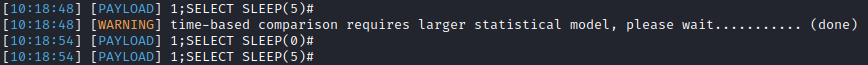 SQLMap uses a statistical model for the recognition of regular and (deliberately) delayed target responses. For this model to work, there is a requirement to collect a sufficient number of regular response times. This way, SQLMap can statistically distinguish between the deliberate delay even in the high-latency network environments.
•
Extending UNION query injection technique tests 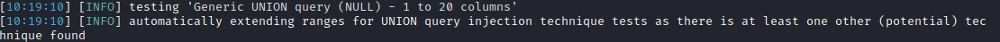 UNION-query SQLi checks require considerably more requests for successful recognition of usable payload than other SQLi types. To lower the testing time per parameter, especially if the target does not appear to be injectable, the number of requests is capped to a constant value (i.e., 10) for this type of check. However, if there is a good chance that the target is vulnerable, especially as one other (potential) SQLi technique is found, SQLMap extends the default number of requests for UNION query SQLi, because of a higher expectancy of success.
•
Technique appears to be usable 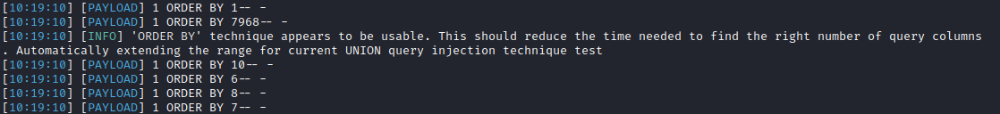 As a heuristic check for the UNION-query SQLi type, before the actual UNION payloads are sent, a technique known as ORDER BY is checked for usability. In case that it is usable, SQLMap can quickly recognize the correct number of required UNION columns by conducting the binary-search approach.
Note that this depends on the affected table in the vulnerable query.
•
Parameter is vulnerable This is one of the most important messages of SQLMap, as it means that the parameter was found to be vulnerable to SQL injections. In the regular cases, the user may only want to find at least one injection point (i.e., parameter) usable against the target. However, if we were running an extensive test on the web application and want to report all potential vulnerabilities, we can continue searching for all vulnerable parameters.
•
Sqlmap identified injection points 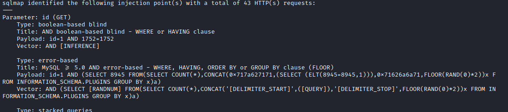 Following after is a listing of all injection points with type, title, and payloads, which represents the final proof of successful detection and exploitation of found SQLi vulnerabilities. It should be noted that SQLMap lists only those findings which are provably exploitable (i.e., usable).
•
Data logged to text files 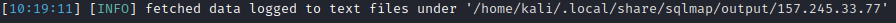 This indicates the local file system location used for storing all logs, sessions, and output data for a specific target - in this case, www.example.com. After such an initial run, where the injection point is successfully detected, all details for future runs are stored inside the same directory's session files. This means that SQLMap tries to reduce the required target requests as much as possible, depending on the session files' data.